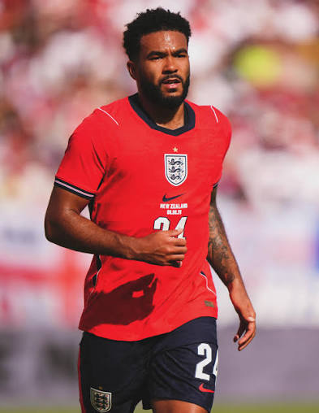

REECE JAMES
Born in Redbridge • Made at Cobham
...Redefining Footballing Excellence

ABOUT
Reece James is an English football player who have enjoyed a meteoric rise in his career to become one of the most accomplished names in the sport. He's known for his strong markings, delightful crosses, and powerful shots. The Chelsea captain knows how to combine his sheer strenght with technique and composure, making him one of the most likable footballers out there.
With an incredible collection of trophies, Reece James has proven himself at the highest level as a seasoned champion. Though the paradigm of a modern full-back, it does not seem to matter if he lines up as a defender, midfielder, or wingback: just give Reece the ball, and he will raise the bar.
F
What number does he wear for Chelsea?
#24.
Has Reece James played for another club?
Yes, a loan spell at Wigan Athletic.
A
Is Reece James the best right back in the world?
Yes. It is hard to think of a better right back.
How old is Reece James?
Born in December 1999, he is 27 years old.
Q
What is Reece James' favorite position?
Right back. He dominates the right back with pace, defending, and crossing.
What is the transfer maarket value of Reece James?
150 million Euros.